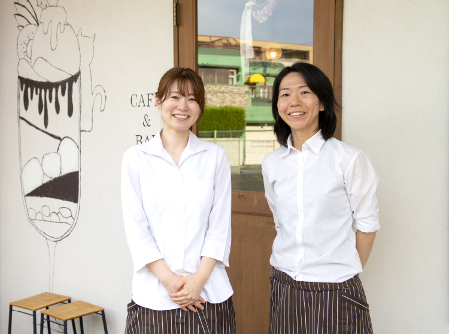
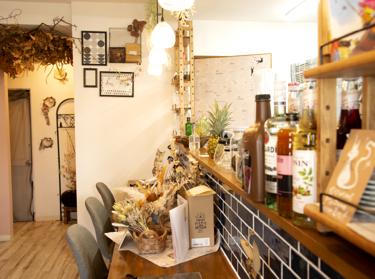

関電不動産開発がお届けする、新築分譲マンション「シエリア西大寺」の公式サイトです。近鉄「大和西大寺」駅徒歩7分、「大阪難波」駅・「京都」駅へ直結。奈良史上初、先進のZEH-M・低炭素建築物認定レジデンス。総61邸
「西大寺キタマチ」の人気店に
この街の魅力を
お聞きしました。
奈良の副都心として発展し、
再開発も進む近鉄「大和西大寺」駅。
そこから分岐する近鉄奈良線と
京都線の間に広がるのが
「西大寺キタマチ」です。
アクセスの良さはもちろん、
多彩な都市機能が集まる駅前が生活圏となり、
界隈にもベーカリーやスイーツショップ、
カフェなどのおしゃれなショップが点在。
その中でも人気店のスタッフの方々に、
「シエリア西大寺」の舞台であり、
さらに住みやすく進化し続ける、
この街の魅力をお聞きしました。
VOICE 1
VOICE 2
- 
杉岡未知さん･齋藤由紀さん
-
「アクセスがよく、夜でも女性が安心して通える店を目指して、
このエリアにお店を出す事に決めました」整備された駅前にはたくさんのお店はありましたが、オープンした５年前は本格スイーツとお酒が同時に楽しめるお店は少なかったんです。京都・大阪・奈良からのアクセスが抜群のこのエリアだからこそ、時間が許す限り語らい合えるお店が実現できると思いました。特に女性のお酒が飲める方も飲めない方も楽しめるように、ノンアルコールも含めカクテルは100種類以上そろえています。
-
「明るい雰囲気で暮らすのに快適な場所だから、
いろいろな世代の方が自然と集まる場所になっています」このエリアは学校も近く、昼は学生さんも多く訪れます。どんどん開発と整備が進んで明るい雰囲気があるので、夜でもお子様連れのご家族が安心してお食事を楽しんでくださっています。他にも遅い時間までふらりとお一人でお客様がご来店されたり、８割が女性のお客様だったりします。このエリアが便利で、暮らしやすさを求めていろいろな世代の方が行き交う雰囲気があるからだと思います。
- 
※徒歩分数は80mを1分として算出しています。
※掲載の人物写真は2022年8月に撮影したものです。
※掲載のimage photo以外の環境写真は2022年7月・8月に撮影したものです。
※掲載のインタビュー内容は個人的なご意見であり、当マンションの将来の周辺環境等を保証するものではありません。
※掲載の情報は2022年9月時点のものであり、今後変更になる場合がございます。
※掲載の人物写真は2022年8月に撮影したものです。
※掲載のimage photo以外の環境写真は2022年7月・8月に撮影したものです。
※掲載のインタビュー内容は個人的なご意見であり、当マンションの将来の周辺環境等を保証するものではありません。
※掲載の情報は2022年9月時点のものであり、今後変更になる場合がございます。
森山早苗さん
「これからも個性豊かなお店が増え、
ますますにぎわうエリアになりそうです」
大型の商業施設はもちろん、再開発前から公共施設・病院も多く、ここ数年の西大寺エリアは共働きの子育て世代の方にとっての暮らしやすさがあるように感じます。友人から「西大寺北町に自分もお店を出したい」と相談を受けることも。さまざまな世代の方が暮らすこのエリアで、多くの方が普段使いできる“優しいパン屋さん”であり続けたいと考えて店づくりをしています。
「この地域の方は、スタッフとお店を
優しいまなざしで迎えてくれる空気感をまとっています」
交通の便がいい最寄り駅ならではの利便性や華やかさの恩恵を受けることもでき、住宅地入口の静けさも併せ持っているのがこのエリアのいいところだと思います。子育てにも、高齢になってからも日常を過ごすのに最適な環境だと思います。そして、生活環境が充実しているからでしょうか、地域のみなさんは地に足の着いた落ち着きのある方が多いように感じます。お店で働くスタッフをあたたかい目で見守ってくださるお客様に、ずっと愛され続ける店でありたいと思います。
角谷淳吾さん